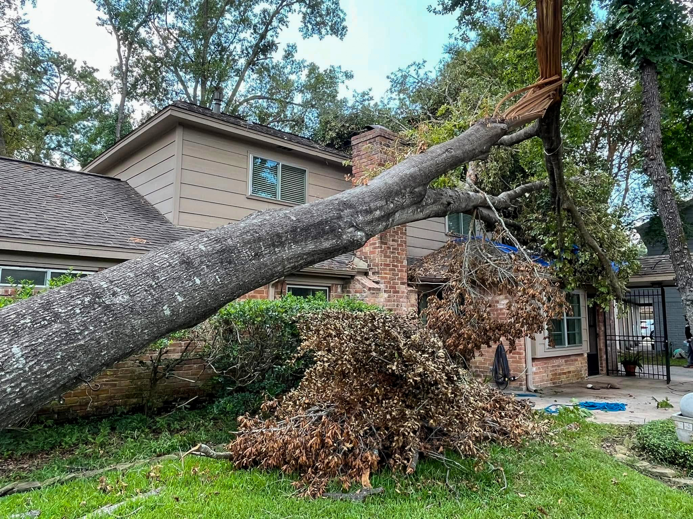
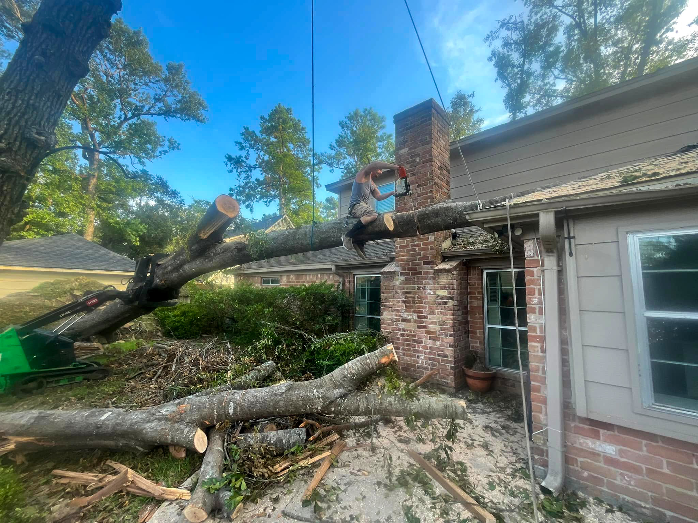

Houston's Trusted Tree Experts
Tree Removal & Full-Service Tree Care
ISA-guided crews, $2 M insured, same-day quotes across Greater Houston.
An aging oak leaning over the roof, roots cracking the driveway, branches tangled in power lines—tree problems escalate fast in Houston's storm-prone climate. Facundo Trees specializes in safe, insured, same-day tree removal that protects your home, your family, and your wallet.
Why Professional Removal Beats DIY Every Time
Problem: One misjudged back-cut can drop 4,000 lbs of trunk onto your roof or a neighbor's fence. Chainsaw kickback, hidden cavities, and Gulf-coast wind gusts turn "simple" removals into six-figure liabilities.
Solution: Our arborists use crane-assisted rigging, ground mats, and $2 M liability coverage to remove hazards safely—often the same day you call.
- Cranes & Rigging – a 30-ton hydraulic crane and triple-redundant lowering blocks protect roofs, pools, and landscaping.
- Precision Felling / Sectional Dismantle – bucket-truck or climber removes limbs top-down; trunk sections can be cribbed onto AlturnaMats to avoid lawn ruts.
- Site Restoration – stump grinding to 12″, root-ball extraction if required, magnetic nail sweep, leaf-blower final pass.



Expert Gear, Veteran Crew
- 75-ft bucket truck & SpiderLift for tight back-yard access.
- State-licensed crane operator on every large removal.
- Class-III rigging ropes rated to 21,000 lbs.
- Commercial chipper → free mulch delivery within 10 mi.
- $2 M general liability.
Our Most-Requested Tree Services
Tree Removal
When a tree is dead, diseased, or dangerously leaning, our ISA-guided crews dismantle it section by section, protecting nearby roofs, fences, and power lines. Stumps can be ground the same day so you're ready for re-planting or sod.
Stump Grinding & Root Ball Removal
Our crew grinds stumps 6–12 inches below grade, eliminates surface roots, and hauls away the chips, leaving you a clean, level spot ready for fresh sod, a new tree, or hardscape. Fast, tidy, and fully insured.
Tree Planting & Transplanting
From pocket-size ornamentals to 6-inch-caliper live oaks, we source Grade-A nursery stock, handle transport, and plant with proper depth, staking, and root-zone conditioning—all backed by a one-year health guarantee.
Tree Trimming & Maintenance
Routine trimming clears rooflines, improves clearance for vehicles, and channels growth away from utility lines. We use ANSI A300 standards to avoid flush cuts and over-pruning that can stress the canopy.
Tree Shaping
Our shaping crew sculpts hedges, topiaries, and ornamental trees into clean, symmetrical silhouettes, boosting curb appeal without harming long-term health.
Fine Pruning & Storm-Prep Pruning
For prized specimen trees, fine pruning targets deadwood and crossing limbs smaller than 2 inches, improving airflow and light penetration. Perfect for fruit trees and landscape centerpieces.
Crown Reduction & Crown Thinning
Structured crown reduction safely lowers canopy height, reduces wind-sail, and protects roofs. Cuts follow lateral-branch rules to ensure rapid, healthy regrowth.
And More…
Emergency tree removal, storm-damage cleanup, hurricane cleanup, hazardous tree removal, large tree removal, palm tree removal, brush and shrub removal, lightning protection for trees, and 24-hour emergency tree service.
Serving All of Greater Houston
Based in NE Houston—our crews are closest to:
Kingwood · Humble · Atascocita · Porter · New Caney · Huffman · Crosby · Highlands · Splendora · Cleveland · Barbers Hill · Mont Belvieu
Also serving: The Woodlands · Spring · Conroe · Tomball · Cypress · Baytown · Channelview · Pasadena · Deer Park · La Porte · Dayton ·
Katy · Sugar Land · Missouri City · Pearland · Friendswood · League City · Clear Lake · Bellaire · Jersey Village
and all communities in Harris, Montgomery, Liberty & Chambers counties.
Frequently Asked Questions
How much does tree removal cost in Houston?
Pricing ranges from $350–$2,100. Key factors are tree height, trunk diameter, proximity to structures, and whether you add stump grinding or crane support. We give itemized, onsite quotes—no hidden fees.
How soon can you schedule the removal?
Standard jobs are booked within 24–48 hours. Storm-related hazards or drive-blocking trees are prioritized for same-day service.
How do you prevent damage to my house and lawn?
Every limb is lowered on controlled rigging lines; trunk rounds are optionally set onto AlturnaMats or plywood sheets. We finish with a blower pass and magnet sweep so your yard looks tidy when we leave.
Is stump grinding included?
Stump grinding is optional and priced separately. We grind below grade, backfill with chips, and leave the area ready for sod or re-planting.
Do I need a permit to remove a tree in Houston?
Most residential trees in Houston do not require a city permit, but protected "corridor" or heritage trees can. We'll confirm during the quote—if a permit is needed, we'll handle the paperwork for you at no extra charge.
Are you licensed and insured?
Absolutely. Facundo Trees carries a Texas arborist license and $2 million in general liability. Proof of coverage is available on request.